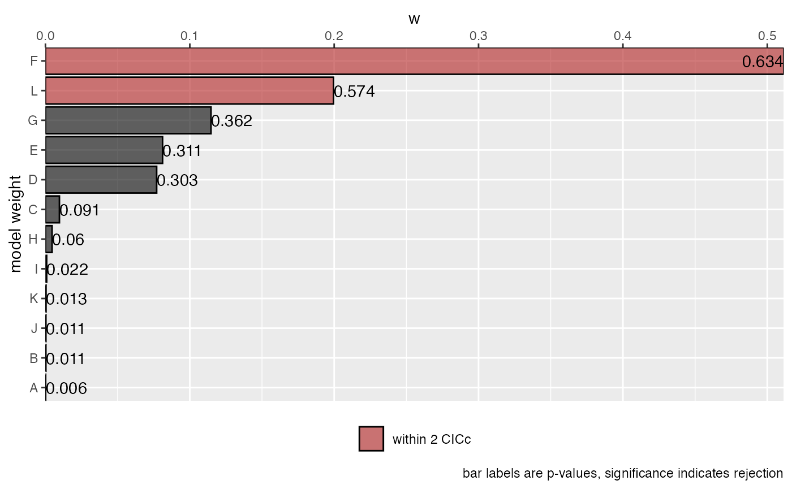
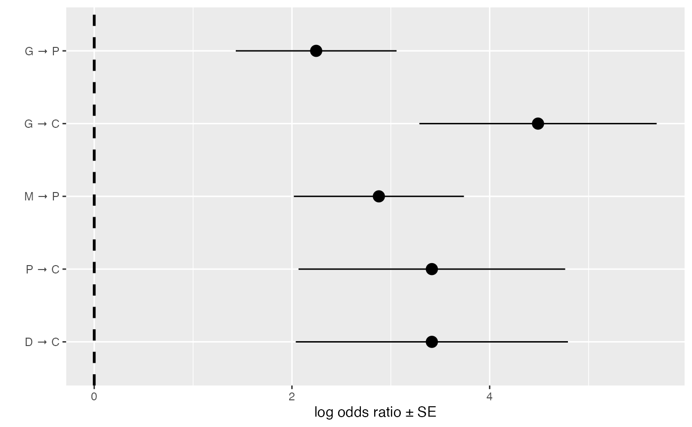
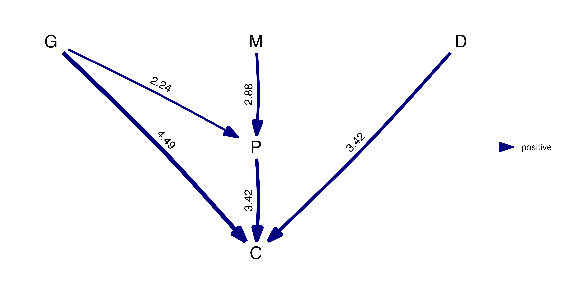

Comparing causal models of binary traits using phylopath
Wouter van der Bijl
2026-08-19
Source:vignettes/binary_models.Rmd
binary_models.RmdIntroduction
This vignette gives a short example of how PPA can be applied to
binary data sets using phylopath. A longer example with
more explanation of the code can be found in the other vignette, “intro
to phylopath”.
On phylogenetic logistic regression
There has been some discussion concerning how to best perform
logistic regression with phylogenetic correction. This package uses
phylolm::phyloglm, written by Lam Si Tung Ho, Robert
Lachlan, Rachel Feldman and Cécile Ané. phylopath’s
accuracy is directly dependent on the accuracy of that function, and if
you don’t trust phyloglm you should not trust binary models
used in phylo_path.
phylolm::phyloglm performs checks for model convergence.
In practice, these often fail. Especially in phylopath,
where we often fit many models, it is likely that at least one model
fails these checks and generates a warning. You can see the warnings
using show_warnings(). You can try changing to the second
method (method = 'logistic_IG10'), or passing parameters
like btol and log.alpha.bound (see
?phylolm::phyloglm). These parameters are then applied to
all models. Another option is to use the phylosem package,
which supports both Binomial and Poisson errors with a different
implementation.
The example below currently generates such warnings, and is only presented as an example.
If you have useful opinions or information on these points, feel free to contact me.
On the interpretation of coefficients
Coefficients from binary models are not the same quantity as coefficients from continuous ones, and it is worth being clear about this before looking at any output.
phylopath standardizes continuous variables before
fitting, that is, it centers them and divides them by their standard
deviation. So a path between two continuous variables is expressed in
standard deviations: it is the familiar standardized regression
coefficient. Binary variables are left as they are, so a path leading to
a binary variable is a log odds ratio instead. In the example below
every variable is binary, which means every coefficient is a log odds
ratio between the two levels of a trait. Those are all the same kind of
quantity, so they can be compared with each other directly, as we do
below.
Where this becomes genuinely confusing is when a single causal model
contains both binary and continuous traits. Such a model has
coefficients in two different units, which is bad enough. On top of
that, a binary predictor contributes a contrast between its two levels
rather than a change per standard deviation, and for a trait where a
proportion p of species has one of the levels, that
contrast amounts to 1 / sqrt(p * (1 - p)) standard
deviations, which is always more than two. Coefficients of this kind of
mixed-type DAG therefore cannot be meaningfully compared with one
another at all, and each has to be read on its own terms.
phylopath will try to warn you when you fit such a model,
and notes it on any output that shows its coefficients.
Importantly, this concerns the coefficients only. The comparison of
the causal models themselves is unaffected, because the d-separation
tests are performed on the unstandardized data: CICc, the
model weights and the ranking of your models do not depend on the scale
of the coefficients. See ?est_DAG for more detail.
Example analysis
Data and hypotheses
This recreates the analysis from the following paper:
Dey CJ, O’Connor CM, Wilkinson H, Shultz S, Balshine S & Fitzpatrick JL. 2017. Direct benefits and evolutionary transitions to complex societies. Nature Ecology & Evolution. 0137.
This is, to my knowledge, the first study to employ PPA on binary traits.
The study investigates the evolution of cooperative breeding in cichlids. In short (my summary), there has been intense debate about what factors drive species towards evolving systems of cooperative breeding. Many have argued (and provided evidence in birds and mammals) that cooperative breeding chiefly evolves from monogamous mating systems because helpers can gain indirect fitness benefits through kin selection. However, a non-exclusive alternative hypothesis is that direct benefits due to ecological factors may be important and provide direct benefits. Therefore, both hypotheses should be considered at the same time.
The data is included in this paper as cichlids and
cichlids_tree
It contains five variables:
- C: Cooperative breeding, cooperative or non-cooperative.
- M: Mating system, monogamous or non-monogamous.
- P: Parental care, maternal or biparental.
- G: Social grouping, grouping or non-grouping.
- D: Diet, piscivore or non-piscivore.
Under the indirect fitness hypothesis, monogamy is expected to be a major driver of cooperative breeding, while group living, biparental care and diet type may be important contributors towards a direct benefits scenario.
Defining the causal models
Following the paper in question, we define 12 putative causal models.
library(phylopath)
models <- define_model_set(
A = c(C~M+D),
B = c(C~D),
C = c(C~D, P~M),
D = c(C~D, M~P, G~P),
E = c(C~D, P~M, G~P),
F = c(C~D, P~M+G),
G = c(C~D, M~P, P~G),
H = c(C~D, M~P),
I = c(C~D, M~M, G~P),
J = c(M~P, G~D),
K = c(P~M, G~D),
L = c(C~M+D, P~M+G),
.common = c(C~P+G)
)
plot_model_set(models, algorithm = 'kk')
Comparing the models
Now that we have our models, data and a tree, we can compare the
models using phylo_path
(cichlids_results <- phylo_path(models, cichlids, cichlids_tree))## 15 rows were dropped because they contained NA values.
## Pruned tree to drop species not included in `data`.## Warning: 4 of the phylogenetic regressions produced warnings.
## ℹ Use `show_warnings()` to read them.## A phylogenetic path analysis, on the variables:
## Binary: G P D M C
##
## Evaluated for these models: A B C D E F G H I J K L
##
## Containing 67 phylogenetic regressions, of which 22 uniqueNote that three messages are printed. This is because there are missing values in our data set that are first being removed. Also, since the tree includes species for which data is missing, the tree had to be pruned. This is done automatically with a message to the user. You should check whether the amount of data removed is correct.
The third messages notes that warnings have been generated, see the Important notes at the start of this vignette. I will continue with these results here, but models with warnings should not be trusted.
phylo_path notes that indeed all variables are
binary.
(s <- summary(cichlids_results))## model k q C p CICc delta_CICc l w
## F F 5 10 7.95 0.63385 33.1 0.00 1.000000 0.511385
## L L 4 11 6.66 0.57358 34.9 1.88 0.390236 0.199561
## G G 5 10 10.94 0.36231 36.1 2.99 0.224235 0.114670
## E E 5 10 11.63 0.31052 36.7 3.68 0.158648 0.081130
## D D 5 10 11.73 0.30322 36.9 3.79 0.150632 0.077031
## C C 6 9 18.91 0.09081 41.0 7.93 0.018945 0.009688
## H H 6 9 20.40 0.05992 42.5 9.42 0.008987 0.004596
## I I 6 9 23.79 0.02170 45.9 12.82 0.001646 0.000842
## K K 6 9 25.37 0.01316 47.5 14.40 0.000748 0.000382
## J J 6 9 25.86 0.01124 47.9 14.88 0.000586 0.000300
## B B 7 8 28.84 0.01099 48.0 14.97 0.000560 0.000287
## A A 6 9 27.55 0.00643 49.6 16.58 0.000251 0.000129
plot(s)
We see that model F is the best supported model. This model notably does not include a link between monogamy and cooperative breeding, giving support to the direct benefits hypothesis.
Evaluating variable importance
Now that we have selected F as our best model, we still have three
factors that affect cooperative breeding: diet, social grouping and
parental care. Which one is more important? For this we can fit the
model and look at magnitude of the coefficients. In this case, since we
want to use the best model we use the function best(). One
can use choice() to choose any arbitrary model, or
average() to average over several models.
best_cichlids <- best(cichlids_results)To see the individual coefficients and their standard errors, simply
print best_cichlids:
best_cichlids## A fitted causal model: 5 variables, 5 paths.
## Binary: G M P D C
##
## Paths — log odds ratios
## path coefficient se
## G → P 2.245 0.813
## G → C 4.489 1.200
## M → P 2.879 0.860
## P → C 3.415 1.349
## D → C 3.415 1.376Or plot those:
coef_plot(best_cichlids, error_bar = "se", reverse_order = TRUE) + ggplot2::coord_flip()
But we can also plot the final model:
plot(best_cichlids)